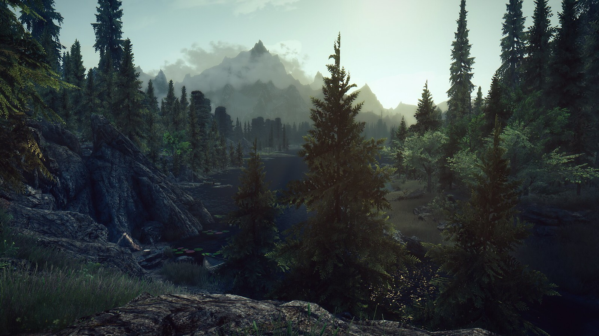

Том 1. Сестры из деревни Кормунд

Михаил Мичурин вёл возмутительно пассивный образ жизни. Он насильно заставлял себя быть серой мышью и никак не выделяться среди других людей. В конечном итоге Мичурин стал узником серой преисподней, которую так усердно берёг.
Однажды, поступив неестественным для себя образом, он попал в другой мир. Он просыпается рядом с богатым городком. Вот только незадача... Первым же делом Михаила приняли за преступника, что с недавнего времени похищает местных жителей. Вот так и началась новая жизнь!
Оглавление
- Пролог
- 1. День, который он не забудет
- 2. Пробуждение
- 3. Выбора нет
- 4. Новое имя
- 5. Катерина Эдегор
- 6. Зацепки
- 7. Черное и белое
- 8. Повод для беспокойства
- 9. Норборг
- 10/1. Предатель...
- 10/2. ...с опустошенным взглядом
- 11. Столкновение
- 12. Ледяной купол
- 13. Михаил Мичурин
- 14. Сделка дьявола с демоном
- 15. Спонтанный союз
- 16. Загнанные в угол
- 17/1. Воспоминания о монстре, которого никогда не сущестовало
- 17/2. Конец беззаботной жизни Адрианы Норборг
- 17/3. Монстр, носящий моё имя
- 18. Dream Team